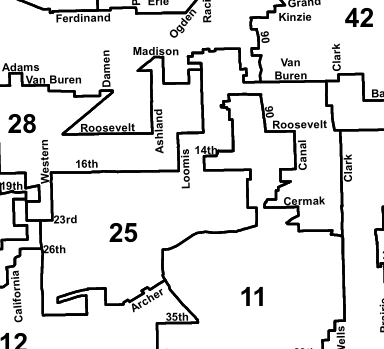

Home
Tickets in the 25th ward
What to do about your ticket
Appeal! Only 9% of tickets issued in the 25th ward between Jan. 1, 2013 and Dec. 31, 2017 were contested. However, 60% of those appeals resulted in the ticket being thrown out.
There is no fee to request an administrative hearing, and no penalty if you lose. Once you request a hearing, you will receive a week during which to appear at a hearing facility. You can go anytime during that week, based on your availability.